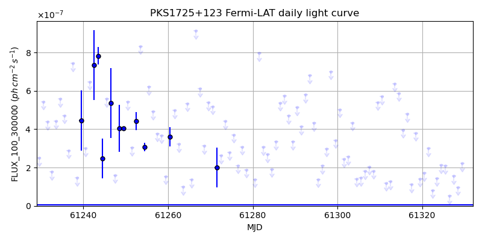
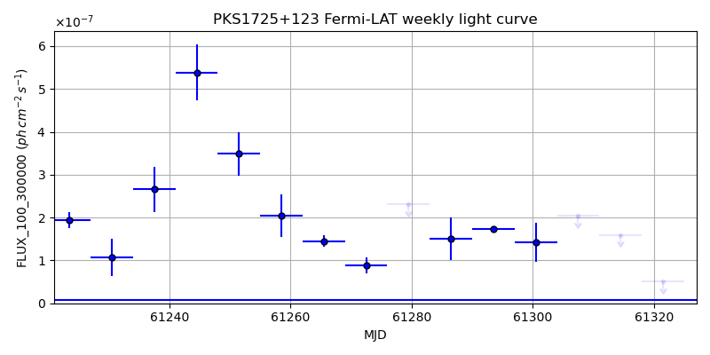
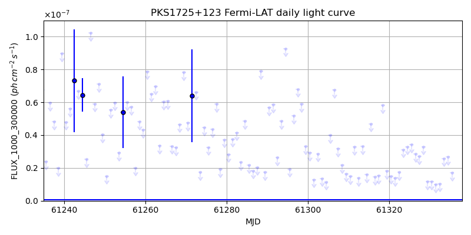
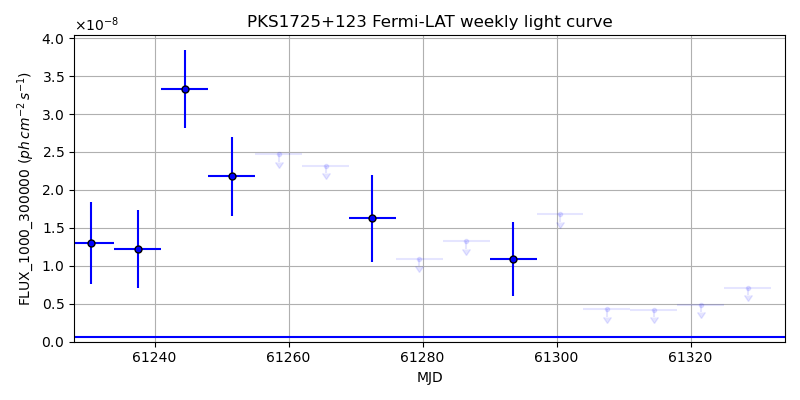

LAT Lightcurve site: https://fermi.gsfc.nasa.gov/ssc/data/access/lat/msl_lc/source/PKS_1725p123
NED: Query
Time of last update of this page: UT: 2026-10-23 15:23 (MJD: 61336.641)
| Property | Value |
|---|---|
| R.A. | 17:28:06.96 |
| Dec. | 12:15:39.6 |
| z | 0.568 |
| 3FGL SpectrumType | PowerLaw |
| 3FGL PL Index | 2.38 |
| 3FGL Flux_100_300000 | 1.63e-08 1 / (s cm2) |
| 3FGL Flux_1000_300000 | 6.79e-10 1 / (s cm2) |
| 3FGL Flux >200 GeV | 4.55e-13 1 / (s cm2) |
| 3FGL Extrap. Crab >200 GeV | 0.00 |
| 3FGL Flux After EBL Absorption >200GeV | 5.13e-14 1 / (s cm2) |
| 3FGL EBL Crab Fraction >200GeV | 0.00 |

| MJD | dMJD | Flux | dFlux | Frac3FGL | FracCrab>200GeV | EBLFracCrab>200GeV |
|---|---|---|---|---|---|---|
| 61331.50 | 0.50 | 1.06e-07 | 0.00e+00 | 0.00 | 0.00 | 0.00 |
| 61332.50 | 0.50 | 7.82e-08 | 0.00e+00 | 0.00 | 0.00 | 0.00 |
| 61333.50 | 0.50 | 1.74e-07 | 0.00e+00 | 0.00 | 0.00 | 0.00 |
| 61334.50 | 0.50 | 4.19e-07 | 0.00e+00 | 0.00 | 0.00 | 0.00 |
| 61335.50 | 0.50 | 1.13e-07 | 0.00e+00 | 0.00 | 0.00 | 0.00 |

| MJD | dMJD | Flux | dFlux | Frac3FGL | FracCrab>200GeV | EBLFracCrab>200GeV |
|---|---|---|---|---|---|---|
| 61300.50 | 3.50 | 1.42e-07 | 4.59e-08 | 20.92 | 0.04 | 0.00 |
| 61307.50 | 3.50 | 2.04e-07 | 0.00e+00 | 0.00 | 0.00 | 0.00 |
| 61314.50 | 3.50 | 1.59e-07 | 0.00e+00 | 0.00 | 0.00 | 0.00 |
| 61321.50 | 3.50 | 5.06e-08 | 0.00e+00 | 0.00 | 0.00 | 0.00 |
| 61328.50 | 3.50 | 5.81e-08 | 0.00e+00 | 0.00 | 0.00 | 0.00 |

| MJD | dMJD | Flux | dFlux | Frac3FGL | FracCrab>200GeV | EBLFracCrab>200GeV |
|---|---|---|---|---|---|---|
| 61331.50 | 0.50 | 9.81e-09 | 0.00e+00 | 0.00 | 0.00 | 0.00 |
| 61332.50 | 0.50 | 1.03e-08 | 0.00e+00 | 0.00 | 0.00 | 0.00 |
| 61333.50 | 0.50 | 2.58e-08 | 0.00e+00 | 0.00 | 0.00 | 0.00 |
| 61334.50 | 0.50 | 2.67e-08 | 0.00e+00 | 0.00 | 0.00 | 0.00 |
| 61335.50 | 0.50 | 1.71e-08 | 0.00e+00 | 0.00 | 0.00 | 0.00 |

| MJD | dMJD | Flux | dFlux | Frac3FGL | FracCrab>200GeV | EBLFracCrab>200GeV |
|---|---|---|---|---|---|---|
| 61300.50 | 3.50 | 1.68e-08 | 0.00e+00 | 0.00 | 0.00 | 0.00 |
| 61307.50 | 3.50 | 4.33e-09 | 0.00e+00 | 0.00 | 0.00 | 0.00 |
| 61314.50 | 3.50 | 4.23e-09 | 0.00e+00 | 0.00 | 0.00 | 0.00 |
| 61321.50 | 3.50 | 4.88e-09 | 0.00e+00 | 0.00 | 0.00 | 0.00 |
| 61328.50 | 3.50 | 7.13e-09 | 0.00e+00 | 0.00 | 0.00 | 0.00 |
--------------------------------------------------------- Using user-supplied coords: 17:28:06.96 12:15:39.6 2000 --------------------------------------------------------- FLWO UT night of: 2026-10-24 Local Sid. @ Midnight: 01:46 Sunset (-15.0) (local, UT): 18:50 01:50 Sunrise (-15.0) (local, UT): 05:26 12:26 Moonrise (local, UT): Moonset (local, UT): 04:57 11:57 Moon phase: 0.95 --------------------------------------------------------- AzTime LSID UT Obj_el Obj_az Mn_el Mn_az Sep. --------------------------------------------------------- 18:50 20:36 01:50 43.0 256.5 32.6 107.9 99.2 19:20 21:06 02:20 36.7 261.4 38.5 113.2 99.4 19:50 21:36 02:50 30.3 265.9 44.2 119.3 99.5 20:20 22:06 03:20 23.9 269.9 49.5 126.7 99.6 20:50 22:36 03:50 17.6 273.8 54.4 135.7 99.8 21:20 23:06 04:20 11.2 277.6 58.4 146.8 99.9 21:50 23:36 04:50 5.0 281.4 61.3 160.3 100.0 22:20 00:06 05:20 -0.7 285.3 62.8 175.7 100.1 22:50 00:36 05:50 -7.5 289.4 62.5 191.7 100.2 23:20 01:07 06:20 -13.4 293.8 60.6 206.6 100.3 23:50 01:37 06:50 -19.2 298.6 57.3 219.3 100.4 00:20 02:07 07:20 -24.7 303.9 53.0 229.7 100.6 00:50 02:37 07:50 -29.8 309.8 48.0 238.2 100.7 01:20 03:07 08:20 -34.5 316.5 42.6 245.2 100.8 01:50 03:37 08:50 -38.5 324.1 36.8 251.1 101.0 02:20 04:07 09:20 -41.9 332.7 30.9 256.3 101.1 02:50 04:37 09:50 -44.4 342.2 24.9 260.9 101.3 03:20 05:07 10:20 -45.8 352.4 18.8 265.1 101.5 03:50 05:37 10:50 -46.0 3.0 12.7 269.2 101.7 04:20 06:07 11:20 -45.1 13.4 6.6 273.1 101.9 04:50 06:37 11:50 -43.1 23.3 0.8 277.0 102.1 05:20 07:08 12:20 -40.1 32.2 -5.3 280.9 102.3 05:26 07:14 12:26 -39.4 34.0 -6.8 281.7 102.4 --------------------------------------------------------- Dark hours >55 deg.: 0.00